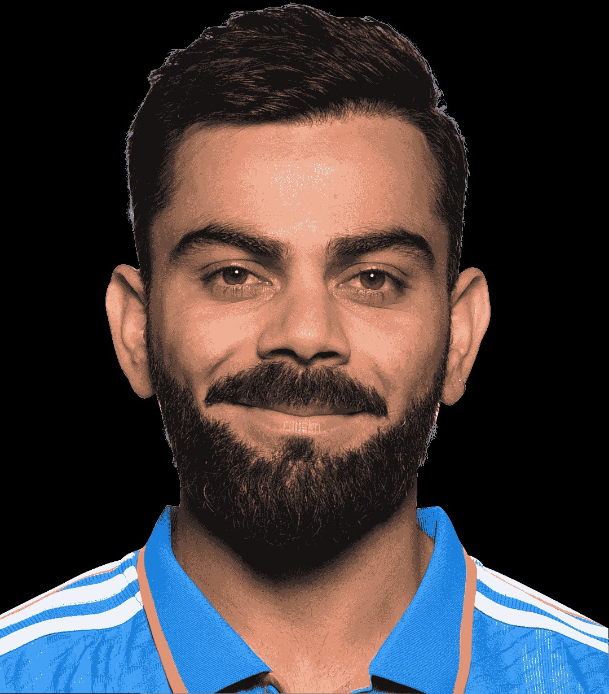
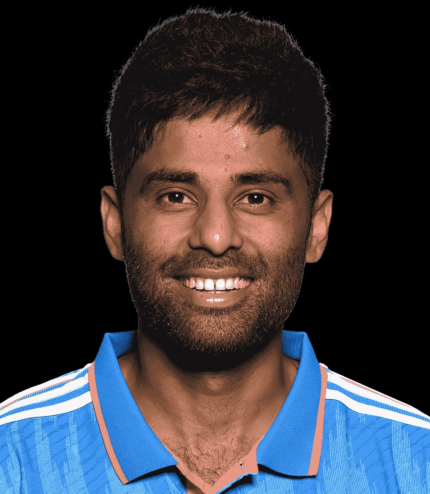

Indian cricketers

Rohit_Sharma
Rohit Gurunath Sharma (born 30 April 1987) is an Indian international cricketer who currently plays for and captains the India national cricket team in Test and One Day International (ODI) matches.

Virat_Kohli
Virat kohil (born 5 November 1988) is an Indian international cricketer who plays Test and One Day International (ODI) cricket for the Indian national team. A former captain in all formats, Kohli retired from Twenty20 International following India's win at the 2024 T20 World Cup.

Mohammed Shami
Mohammed Shami (born 3 September 1990) is an Indian international cricketer who serves as a right-arm fast or fast medium bowler, representing India in all formats. He has played for Bengal in domestic cricket and for four teams in the Indian Premier League

SIRAJ
Mohammed Siraj (born 13 March 1994) is an Indian international cricketer who plays as a right-arm fast bowler for the Indian national team. He also plays for Royal Challengers Bengaluru in the Indian Premier League and Hyderabad in domestic cricket

SURYAKUAMR YADAV
Suryakumar Ashok Yadav, (born 14 September 1990) also known by the initialism SKY, is an Indian international cricketer who is the current T20I captain of Indian cricket team.